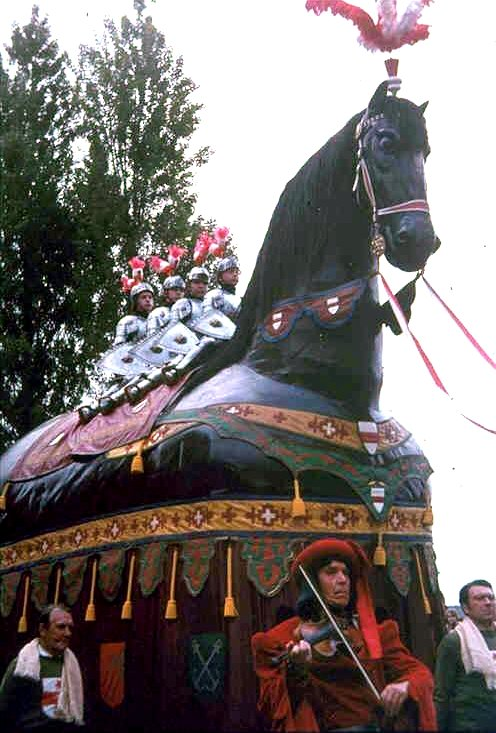
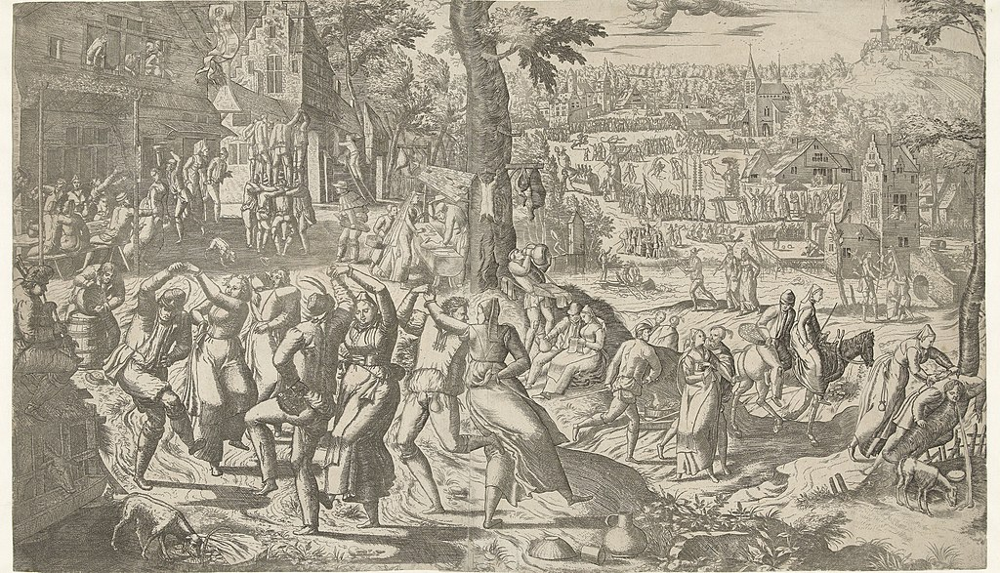
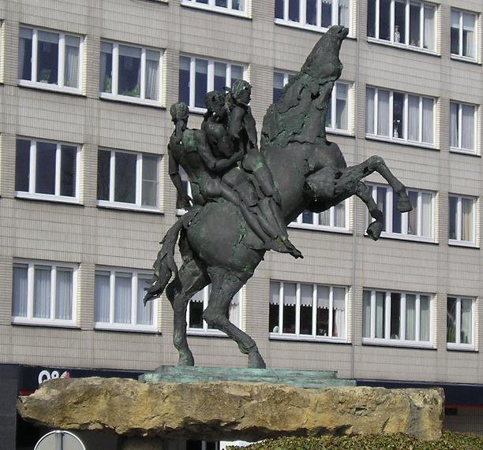

't Ros Beiaard
't Peirt in volle glorie, gedragen door de Pijnders, bereden door de Vier Heemskinderen.
Sint-Joris kermis
Op deze prent uit 1553 (Pieter van der Borcht) is rechts van de boom het Ros Beiaard te zien.
De rotonde aan de Brusselse Poort
Standbeeld van 't Peirt in Dendermonde.